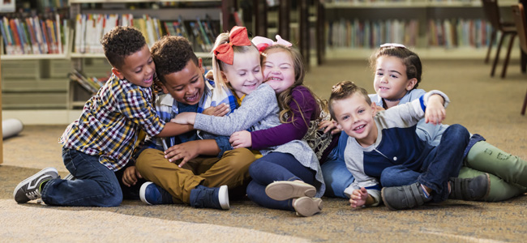
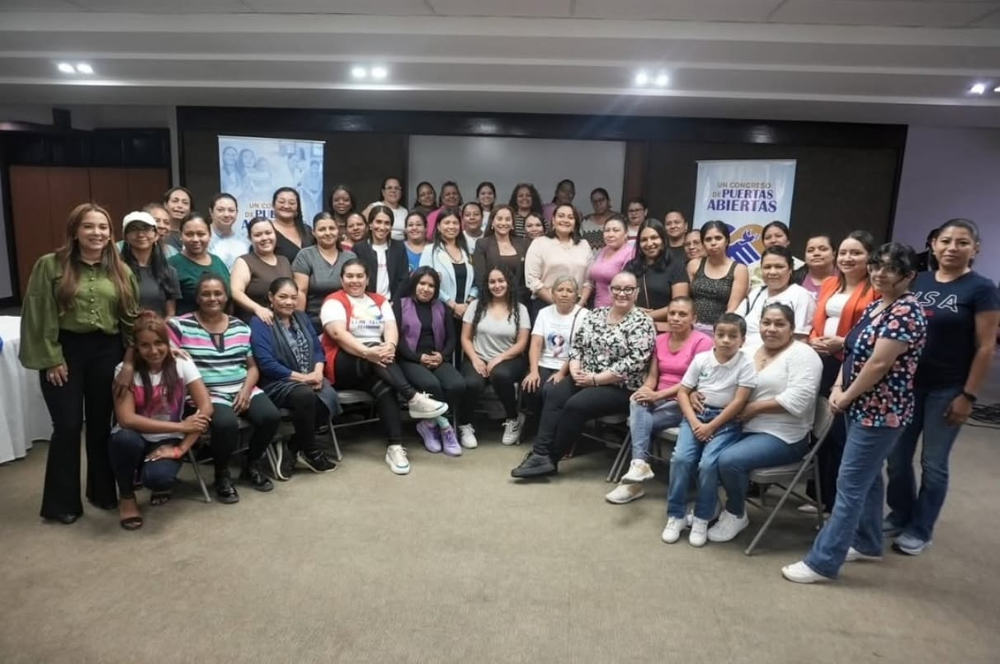

Programas de REDMASOL
La Asociación Red Madres Solidarias desarrolla programas orientados a mejorar la calidad de vida de madres de personas con discapacidad, madres solteras y mujeres emprendedoras.
A través de estas iniciativas se busca promover la educación, fortalecer las capacidades de las familias, generar oportunidades y brindar apoyo a personas que se encuentran en situaciones de vulnerabilidad.
Durante el año 2025, REDMASOL impulsó diferentes programas utilizando fondos propios de la Asociación, con el propósito de contribuir al desarrollo integral, la inclusión social y el bienestar de las familias beneficiarias.

Gestión de Becas para Niños
Programa dirigido a niños que estudian en escuelas privadas regulares y a niños con discapacidad, facilitando el acceso a oportunidades educativas.
El programa busca apoyar la continuidad de los estudios y contribuir al desarrollo integral de los niños y sus familias.
Becas para Jóvenes Universitarios
Programa de gestión de becas dirigido a jóvenes que desean continuar su formación académica en universidades.
Esta iniciativa busca ampliar las oportunidades educativas y contribuir a que los jóvenes puedan avanzar en su formación profesional.

Formación para Madres
Gestión de becas para cursos de bisutería artesanal o gastronomía dirigidos especialmente a madres de personas con discapacidad.
Mediante estas oportunidades de capacitación se busca fortalecer conocimientos y habilidades que puedan ser utilizados para desarrollar actividades productivas.
Gestión de Donaciones
Programa destinado a gestionar donaciones como apoyo para familias que atraviesan situaciones de necesidad.
El acompañamiento busca contribuir al bienestar de las familias, considerando no solamente sus necesidades económicas o materiales, sino también aspectos emocionales y de acceso a recursos.
¿Qué buscamos con nuestros programas?
Los programas de REDMASOL están orientados a promover la autosuficiencia familiar, la cohesión social y una mejor calidad de vida para las personas y familias beneficiarias.
Nuestro trabajo busca generar oportunidades en áreas fundamentales como la educación, la formación, la economía familiar y el acompañamiento a madres y personas con discapacidad.
De esta manera, cada programa representa una oportunidad para fortalecer las capacidades de las familias y avanzar hacia una sociedad más inclusiva.
Continuidad de nuestros programas
Para el año 2026, REDMASOL contempla dar continuidad a los programas desarrollados durante 2025, manteniendo el compromiso de apoyar a las familias y a la comunidad de personas con discapacidad en Honduras.
La organización continúa trabajando para promover el acceso a oportunidades educativas, fortalecer capacidades y contribuir al bienestar de las familias.
¡Sé parte del cambio!
El apoyo de personas, instituciones y voluntarios permite que iniciativas como estas continúen generando oportunidades para madres, niños, jóvenes y familias.
Conoce nuestras opciones de voluntariado o comunícate con nosotros para conocer cómo puedes apoyar a REDMASOL.
Quiero apoyar Contáctanos